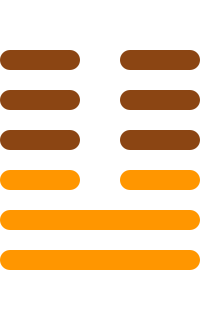

第十九卦
临卦

卦辞
元亨，利贞。至于八月有凶。
临卦象征莅临、监临与领导。卦辞意为：大亨通，有利于坚守正道。到了八月会有凶险。临卦教导我们要善于领导，但要注意时机的转变。
彖传
临，刚浸而长，说而顺，刚中而应，大亨以正，天之道也。至于八月有凶，消不久也。
彖传说：临，刚健逐渐增长，喜悦而顺从，刚健居中而有应和，大亨通而正道，是天道。到了八月有凶险，是因为消减不会长久。
象传
泽上有地，临。君子以教思无穷，容保民无疆。
象传说：泽上有地，就是临卦。君子应当效法这种精神，教化思虑无穷，容纳保护民众无边。泽上有地，象征居高临下，君子要教导保护民众。
爻辞
初九：咸临，贞吉
都来监临，坚守正道吉祥。
初九爻位于最下方，开始监临。能够普遍地监临指导，坚守正道就会吉祥，表示良好的开始。
九二：咸临，吉无不利
都来监临，吉祥没有不利的。
九二爻得中得正，监临有方。能够普遍地监临，吉祥没有任何不利，表示领导有方。
六三：甘临，无攸利。既忧之，无咎
甜言蜜语监临，没有利益。已经忧虑它，没有灾害。
六三爻位置不当，监临不当。用甜言蜜语来监临没有好处，但能够意识到问题并改正，就不会有灾害。
六四：至临，无咎
到达监临，没有灾害。
六四爻接近君位，监临得当。能够亲临现场指导，不会有灾害，表示良好的领导方式。
六五：知临，大君之宜，吉
智慧监临，大君所适宜，吉祥。
六五爻居中尊位，智慧监临。用智慧来监临，这是大君应有的做法，吉祥如意。
上六：敦临，吉无咎
敦厚监临，吉祥没有灾害。
上六爻位于极点，敦厚监临。用敦厚的方式监临，吉祥没有任何灾害，表示圆满的领导。